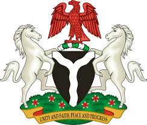

Nigerian Coat of Arm
Nigerian Coat of Arm
Nigeria, officially called the Federal Republic of Nigeria, a country in West
Africa, with
a coast at the Bight of Benin and the Gulf of Guinea. Nigeria is bordered by four countries;
Benin, Cameroon, Chad, and Niger, also shares maritime borders with Equatorial Guinea, Ghana, and São Tomé and Príncipe.
One World - Nations Online .:. visit Nigeria
Plan your next trip to visit Nigeria...This Online Project is aimed to improve cross-cultural understanding and global awareness about Nigeria.